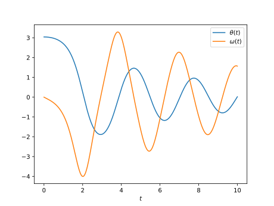

Reto de métodos numéricos: Día 18
Durante octubre (2017) estaré escribiendo un programa por día para algunos métodos numéricos famosos en Python y Julia. Esto está pensado como un ejercicio, no esperen que el código sea lo suficientemente bueno para usarse en la "vida real". Además, también debo mencionar que casi que no tengo experiencia con Julia, así que probablemente no escriba un Julia idiomático y se parezca más a Python.
El método de Runke-Kutta
Hoy tenemos el método de Runge-Kutta. Este es el método de Runge-Kutta más popular, y usa un promedio ponderado de 4 incrementos (más pequeños).
Los increntos se hacen de acuerdo a la siguiente fórmula
donde
A continuación se presentan los códigos.
Python
from __future__ import division, print_function import numpy as np import matplotlib.pyplot as plt def RK4(dydt, y0, t, args=()): ndof = len(y0) ntimes = len(t) y = np.zeros((ndof, ntimes)) y[:, 0] = y0 for cont in range(1, ntimes): h = t[cont] - t[cont - 1] k1 = dydt(y[:, cont - 1], t[cont], *args) k2 = dydt(y[:, cont - 1] + 0.5*h*k1, t[cont] + 0.5*h, *args) k3 = dydt(y[:, cont - 1] + 0.5*h*k2, t[cont] + 0.5*h, *args) k4 = dydt(y[:, cont - 1] + h*k3, t[cont] + h, *args) y[:, cont] = y[:, cont - 1] + h/6*(k1 + 2*k2 + 2*k3 + k4) return y def pend(y, t, b, c): theta, omega = y dydt = [omega, -b*omega - c*np.sin(theta)] return np.array(dydt) b = 0.25 c = 5.0 y0 = [np.pi - 0.1, 0.0] t = np.linspace(0, 10, 101) y = RK4(pend, y0, t, args=(b, c)) plt.plot(t, y[0, :]) plt.plot(t, y[1, :]) plt.xlabel(r"$t$") plt.legend([r"$\theta(t)$", r"$\omega(t)$"]) plt.show()
Julia
using PyPlot function euler(dydt, y0, t; args=()) ndof = length(y0) ntimes = length(t) y = zeros(ndof, ntimes) y[:, 1] = y0 for cont = 2:ntimes h = t[cont] - t[cont - 1] y[:, cont] = y[:, cont - 1] + h*dydt(y[:, cont - 1], t[cont], args...) end return y end function pend(y, t, b, c) theta, omega = y dydt = [omega, -b*omega - c*sin(theta)] return dydt end b = 0.25 c = 5.0 y0 = [pi - 0.1, 0.0] t = linspace(0, 10, 1001) y = euler(pend, y0, t, args=(b, c)) plot(t, y[1, :]) plot(t, y[2, :]) xlabel(L"$t$") legend([L"$\theta(t)$", L"$\omega(t)$"]) show()
En ambos casos el resultado es la siguiente figura.
Comparación Euler/Runge-Kutta
Si comparamos los métodos de Euler y Runge-Kutta para el ejemplo anterior usando 101 pasos, 10 veces menos que antes, obtenemos los resultados de abajo. El gráfico superior se obtuvo usando el método de Euler. Podemos ver que los resultados no son los mismos. Podríamos decir (de forma poco rigurosa) que necesitamos menos pasos en el método de Runge-Kutta que en el método de Euler.


Comparación Python/Julia
Respecto al número de líneas tenemos: 36 en Python y 37 en Julia. La comparación
en tiempo de ejecución se realizó con el comando mágico de IPython %timeit
y con @benchmark en Julia.
Para Python:
%timeit RK4(pend, y0, t, args=(b, c))
con resultado
100 loops, best of 3: 7.62 ms per loop
Para Julia:
@benchmark RK4(pend, y0, t, args=(b, c))
con result
BenchmarkTools.Trial: memory estimate: 255.09 KiB allocs estimate: 5205 -------------- minimum time: 152.881 μs (0.00% GC) median time: 159.939 μs (0.00% GC) mean time: 202.514 μs (16.55% GC) maximum time: 3.785 ms (91.79% GC) -------------- samples: 10000 evals/sample: 1
En este caso, podemos decir que el código de Python es alrededor de 50 veces más lento que el de Julia.
Comentarios
Comments powered by Disqus